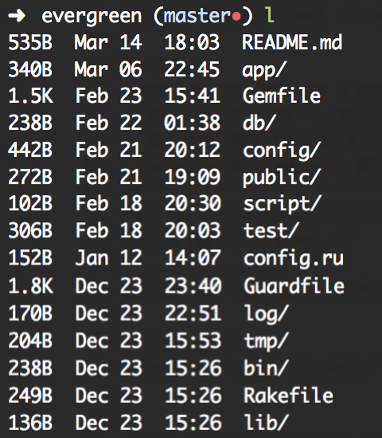
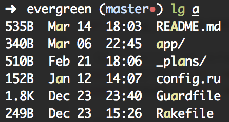

My zsh aliases
by Devon Zuegel
Aliases are one of my favorite terminal customizations. They make the most frequently-used commands shorter and allow improvements on the standard ones, enabling you to tailor programming in the terminal to your individual needs and preferences. These aliases are stored in ~/.zshrc.
Listing files
The one alias that has improved my workflow the most is a quick, one-keypress command l. This replacement for the standard ls command prints the size, last-modified date and time, and the directory name of each file and sub-dir in the current directory. It orders the rows by the last-modified date, so the most current files and projects are up top on the list.
# Flags:
# -G: default colors, different for directories vs. files
# -F: includes a trailing `/` at the end of directory names
# -l: display long format (file types, permissions, number of hard
# links, owner, group, size, last-modified date, and filename)
# -t: sort the list of files by modification time
alias l='ls -GF -lt | awk '\''{
printf("%-4.4s ", $5);
printf("%4s %-3.2d %-5.5s ", $6, $7, $8);
printf("%-7.59s\n", $9);
}'\'' | tail +2' # Remove first line from output (formerly "total")

When looking to filter through filenames quickly, I use lg #{regex}, which pipes the result of l to a case-insensitive grep command.
alias lg='l | grep -i'
Git
My git aliases are a close second to the directory listing commands. The ones I use most frequently are:
| Alias | Original Command |
|---|---|
gac 'My commit message' |
git add -A && git commit |
gp |
git push |
gch #{branchname} |
git checkout #{branchname} |
gb |
git branch |
You can find my entire .zshrc file below. Feel free to use, abuse, and modify my aliases as you wish!